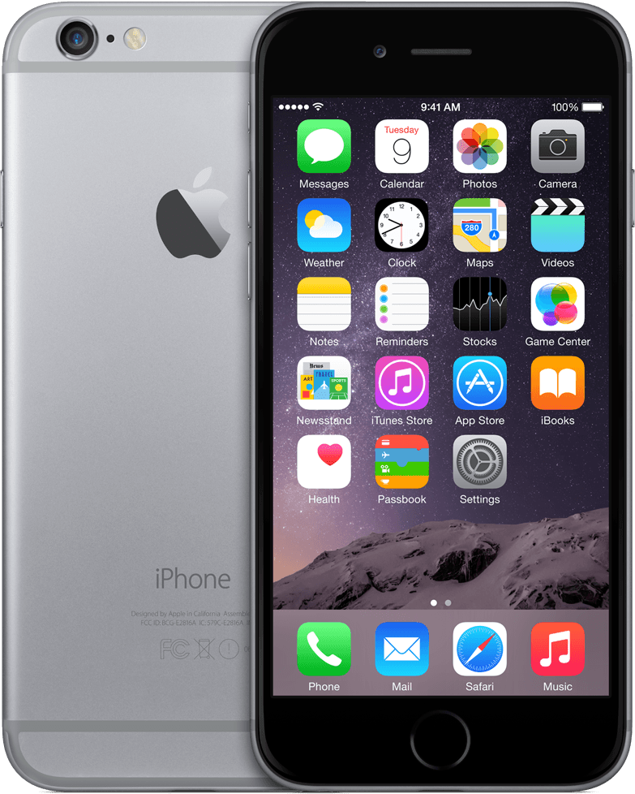

hoe zien jullie de toekomst
‘We hopen dat de app over ongeveer een jaar te downloaden is zodat iedereen hem kan gebruiken. Daarnaast is het onze droom dat de app in meerdere steden gebruikt gaat worden. Onze focus ligt hierbij op steden, omdat daar de gezondheid slechter is en de levensverwachting korter.’
De app richt zich op beginnende sporters. Waarom?
‘Het is een grote uitdaging om mensen die nog niet veel sporten te laten bewegen. Bijna de helft van de Amsterdammers sport namelijk te weinig. Ons doel is om dit percentage naar beneden te brengen.’
‘Hiervoor hebben we inzicht nodig in welke stimulans werkt bij mensen die niet vaak sporten. Hier werkt een andere stimulans dan bij mensen die veel sporten. Bij hen werkt het competitie-element heel goed. Bij beginnende sporters werkt dat niet, het schrikt juist af.’
Hoe werkt deze app?
‘Deze app communiceert met beacons. Dat zijn zendertjes die een bluetoothsignaal afgeven dat de app kan ontvangen. In het Oosterpark zitten ze in de lantaarnpalen. De app meet de afstand, de duur en de snelheid van je loop.’
‘Als je langs een lantaarnpaal rent met een zender eraan, ontvang je in de app een mededeling. Bijvoorbeeld: “Je loopt nu langs een bankje, hier kan je squats doen.” Of: “Je bent halverwege, ga zo door.” Ook krijg je video’s te zien van de oefeningen die je op die plek kan uitvoeren.’